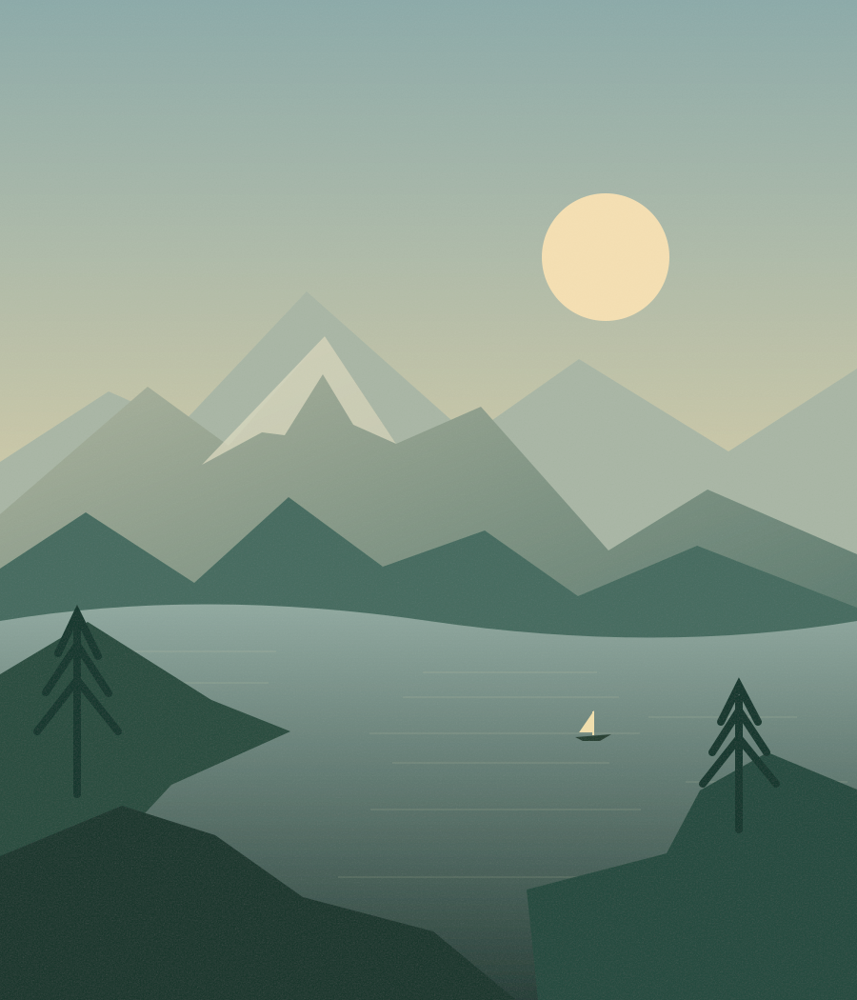

构图观察台01 / FRAME

LIVE VIEWFRAME 001
f / 81 / 125 sISO 100
01 / 观察练习
今天，试着为同一处风景
等待两种不同的光。
你的摄影学习路线
认识相机 / 控制曝光 / 组织画面 / 读懂光线 / 完成作品
01 / THE FIELD GUIDE
让每一次拍摄，都有依据。
七个章节，二十一个知识卡片。
按顺序学习，也可以从眼前的问题开始。
没有找到对应内容，试试“光圈”“构图”或“用光”。
02 / EXPOSURE PLAYGROUND
三个参数，一起看懂。
移动滑块，观察亮度与效果提示的变化。
这是教学示意，实际曝光请结合现场测光。
曝光实验 / 手动模式日间风光
基准曝光
−3
0
+3示意图只模拟相对亮度。景深、噪点与运动效果见右侧提示，画面不模拟这些效果。
试着改变一种选择
f/1.4 · 大光圈f/16 · 小光圈
1/2 s · 慢1/2000 s · 快
100 · 低6400 · 高
相对场景基准0.0 档
试一试
把光圈从 f/8 开大到 f/5.6，再把快门从 1/125 s 加快到 1/250 s。观察相对亮度是否基本不变。
03 / COMPOSITION & LIGHT
画面里的秩序，光线里的情绪。
构图与布光都是表达的选择。
先观察变化，再判断它是否适合你的主题。
布光观察台02 / LIGHT
04 / A QUICK CHECK
理解了，
就试着判断。
每轮随机抽取六题。
答案后附解释，把记忆变成理解。
BEFORE
YOU SHOOT ↗
问题 01 / 06答对 0 题
05 / OUT INTO THE WORLD
下一张照片，
从这里出发。
出门前花一分钟检查。完成一项就勾选一项，
清单仅保存在这台设备的当前浏览器中。
拍摄前检查清单0 / 6
拍完后再问自己：我希望观众先看到什么？